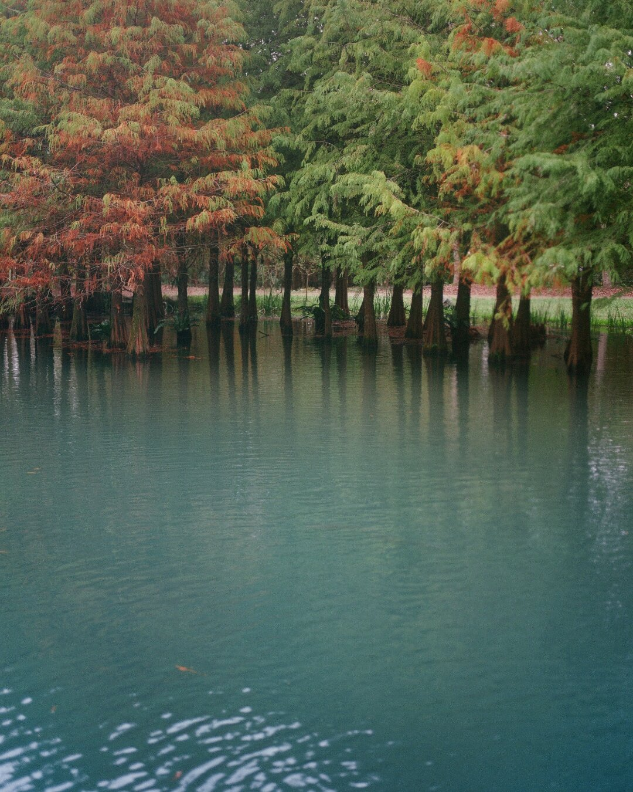
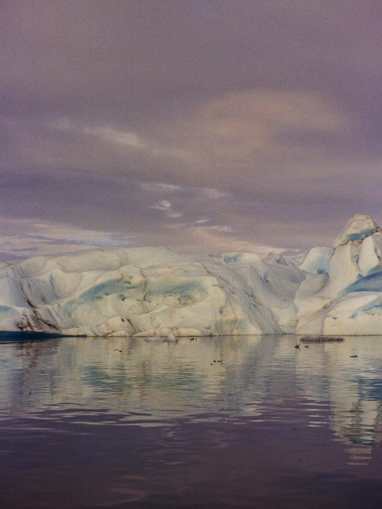

Our Mission
Why We Exist
To amplify awareness and accelerate action for Nature.
Every single aspect of life on our planet is powered by Nature. Nature provides, heals, inspires — and demands our respect. It's a source of beauty and balance, but also immense force. As its roar grows louder, the question isn't whether we hear it. It's whether we're ready to respond.
Our mission is informed by the Global Biodiversity Plan, agreed by world leaders in Montreal — a powerful framework of actions to halt biodiversity loss and preserve all life on earth. If executed at scale, they will deliver the Biodiversity Agreement Targets with an impact that will not just preserve, but enrich all life on this planet for generations to come.
Last September, the inaugural NAT GALA brought together the worlds of culture and philanthropy, raising millions to fund critical nature restoration projects around the globe.
Looking ahead, THE NAT has set itself a 10 year goal to drive the investment needed into nature. It will do this by continuing to serve as an accelerator for positive action, amplifying vital efforts and scaling transformative solutions that protect our planet's most precious ecosystems.
Kin Coedel
How We'll Do It
Three horizons of action — from funding today's restoration projects to rebuilding the financial architecture of tomorrow.
Immediate action
Nature needs action today, which is why we're aiming to get immediate funds towards nature-positive projects in restoration, communication and education.

Redirecting capital
This is our ultimate mission. Transforming how the world invests. If just 2% of global capital is redirected towards nature-positive outcomes, we can secure a thriving future for all. We're building the financial architecture to make this possible.

A permanent legacy
Creating a permanent legacy for Nature. A world where the preservation and restoration of our natural world is the foundation of every human endeavour.
See the mission in action
THE NAT GALA is where this mission comes to life each year — culture and philanthropy raising immediate capital for nature restoration.
Kin Coedel
Photography — Kin Coedel